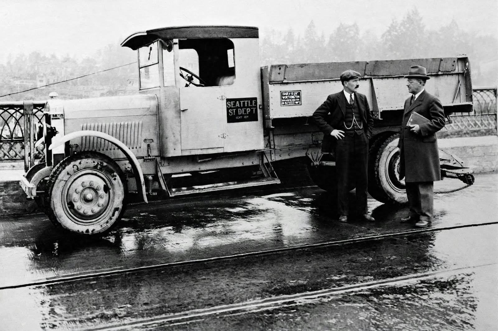

LOS FUNDADORES DE KENWHORT

La foto es de 1923 Seattle. Ala izquierda Harry Kent. ala derecha Edgar Worthinton, parados juntos al primer Kenwhort que hicieron un volteo de 6 toneladas hecho para el departamento de Calles de Seattle.
Fijate que ya decia "Seattle ST Dept" en la puerta. De ahi salio el nombre:KEN de Kent y WORTH de Worthington.
De ese camion de madera y llantas macizas al t680 next gen rojo hay 100 años de diferencia
SIGUIENTE->